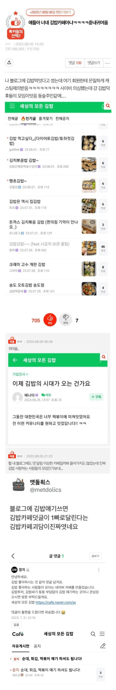

네이버의 은밀한 김밥 카페 ㄷㄷㄷㄷ
댓글
얘기 해도 되는데 게시물이 하나도 없다?
ㅋㅋㅋㅋㅋ 귀엽네 근데 나도 김밥 개좋아해
김밥 카페 가면 진짜 금손들 많음
순수하게 먹은거 찍아올리는 어머님들도 계신데
이런분들은 조명을 잘못쓰거나 디피가 안이쁨
ㅋㅋㅋㅋ
킹밥은 진짜 죽을 때까지 먹을 수 있음 사실 죽어서도 먹을 수 있음 관에도 넣어다오 제사상에도 올려다오
나도 김밥 존나 좋아하는데 김밥은 좀 칼로리 대비 먹은 체감이 존나 안 돼서 관리하려면 못 먹게 되더라 ㅠㅠ 넘모 슬픔
꼭꼭 씹어서 먹으면 포만감이 많이 올라가용
그건 그렇겠지만, 애초에 김밥은 꼭꼭 씹어먹는 게 김밥 먹는 법도에 잘 맞지가 않는데다 꼭꼭 씹어먹어서 포만감 올라가는 건 다른 음식은 더 올라간다구
이상하게 김밥은 같은 조건에서 먹은 체감 대비 칼로리가 높음. 절대 1줄이 1인분이 아닌 것 같은데 칼로리는 1끼치를 넘어버린다구
뭐라고 김밥 2줄이 한끼 아니었어?
내가 느끼기에도 그런데 1줄에 500kcal는 되는 것 같더라. 그래서 2줄 먹으면 1끼분을 넘어버림 ㅠ
법도 ㅋㅋㅋㅋㅋㅋㅋㅋㅋㅋㅋㅋㅋㅋㅋ 개웃기네 ㅋㅋㅋㅋㅋㅋㅋㅋㅋ 너 진심이구나
키토김밥드셈
밥을 얇게깔고 채소존나넣으면 뒤지게 배부르고 맛도있고 건강함
김밥좋아
떡튀순 공지 ㅋㅋ
썰지말고 달라고 한거 통째로 쥐고 먹으면 유독 맛나더라
초딩때 놀이터에서 놀고있으면 엄마가 김밥한줄 쥐어주면서 먹으면서 놀라고했음 ㅋㅋㅋㅋ
먹다보면 시금치나 단무지 같은거 쭉 끌려나오고 지랄나지만 안썰어먹어도 쓰레기 적고 나름의 재미가 있음
저런 순수한 동숲류 카페 보면 기분이 좋아지더라 ㅋㅋ
간만에 집에서 김밥 해먹었는데 좋더라
산 타고 정상에서 먹는 김밥 맛있는데 늘 김밥천국 가서 두줄 포장해서 등산하러 댕김
햄버거 김밥 만두 <- 이 세 음식을 가장 좋아해서 흥미생기네 ㅋㅋ
근데 김밥 이거 살찌는 원인 1위던데 ㅋㅋㅋ
밥 양이 생각보다 엄청 많이 들어가는데 짭잘하고 그래서 잘 들어감
그래서 탄수화물 섭취가 어마어마함
많이 먹으면 안좋음
ㄹㅇ 당수치 생각보다 많이 오름...
절대 건강식 아님 ㅋㅋ
냉면 모임도 있는데 김밥 모임도 있네
사실 카페는 커지면 돈이 되거든
경제활동이라고 보면 된다
김천만 깁밥축제하지말고 모든도시가 김밥축제 했으면 좋겠다
공지글 왜 무섭지? ㅋㅋㅋ 떡튀순 얘기 하셔도됩니다!(쭉정이 걸러내기)